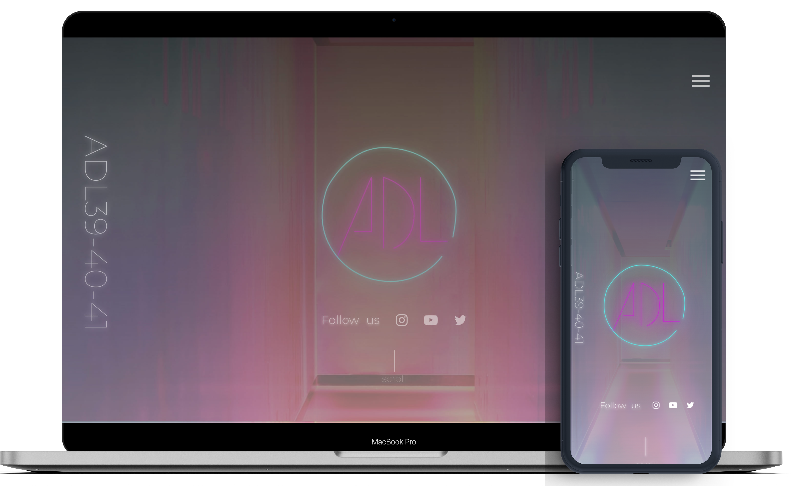
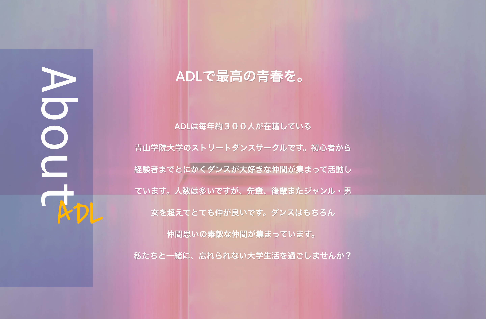
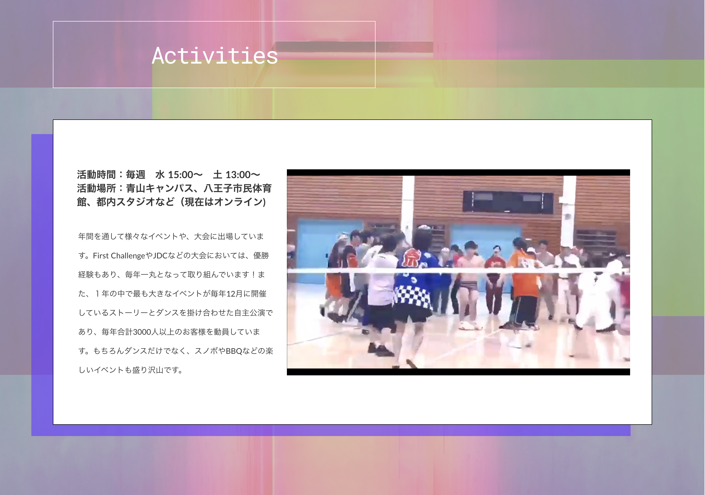
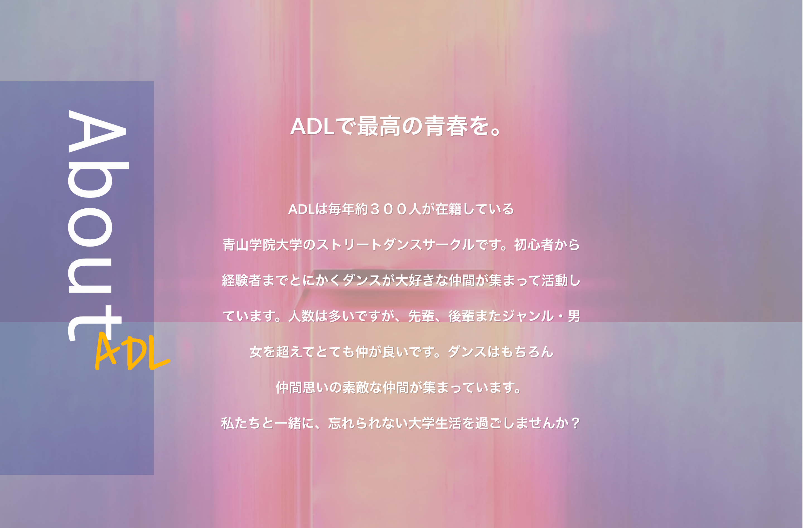
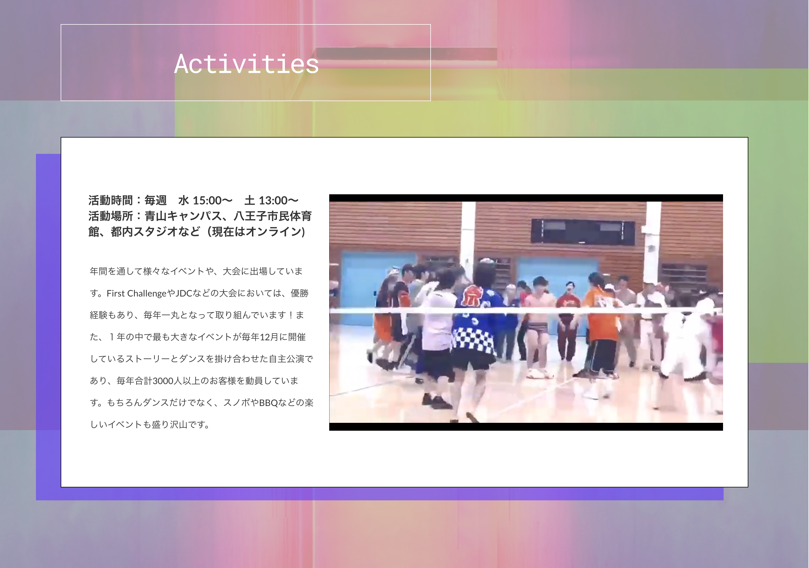

WORKS

VIEW ALL
サークルサイトLP
１週間
photoshop,AdobeXD, STUDIOでサイト構築
制作意図
自分がサークルを選ぶ際に、SNSだけでは十分な情報を集めることができなかったため、より詳細な活動内容やサークルの雰囲気がわかるサイトがあるといいと思い、制作に至りました。 またこれは自分が大学時代に実際に所属していたサークルであり、自分のことを知ってもらうという意味でも自分が大学生活ほとんどを費やしたサークルについて紹介したいという思いがありました。
 


